Table of Contents
- About SWT
- About this document
- Communication and support
- New & Changes
- Pre-requisites
- SWT Developer setup (Java part of it)
- Build GTK SO files
- SWT code base overview and OS.java
- SWT Fixed Container
- SWT and Gtk Versions
- About Gtk Versions
- SWT's Gtk Version Support
- Switching snippets to run on either GTK2 or GTK3.
- Gtk version on your system
- Getting gtk version programtically in java/SWT
- Getting gtk version versions Eclipse is running on
- Gtk Versions on Fedora/Red Hat
- About
- General testing strategy
- Versions to test on
- Set up for Multiple GtkVersions
- Gtk from sources
- References
- Adding custom functions to OS.java
- About Gtk
- C/C++ Development in Eclipse
- Import Gtk Sources into Eclipse for browsing
- Writing & Debugging Gtk apps in Eclipse
- GtkInspector
- Debugging the native 'Gtk' C part of an SWT application.
- Tips for Gtk/swtFixed debugging
- Troubleshooting Eclipse
- Appendix / Random things
About SWT
SWT is the layer between PlatformUI and the underlying Gtk2 or Gtk3 of the system.
SWT can be launched to use Gtk2 or Gtk3, but cannot use them both at the same time.
Communication from java to Gtk occurs through native calls defined in OS.java.
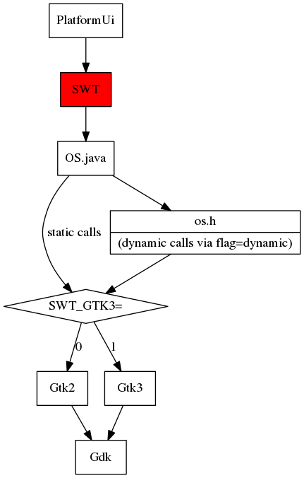
About this document
UNDER_CONSTRUCTION 'under construction' sections like this.
"Under Construction" sections are still either temporary quick notes or unpolished thoughts. I tidy these once in a while, come back later.
But if in a rush, feel free to ping me on twitter and I'll write things up for you.
~Read with caution.
You will learn
- How to configure your machine (Eclipse/Git) to contribute SWT patches.
- Info on building SO images to run snippets with newest SWT Master.
- Info on Gtk Versions, compiling various Gtk Versions.
- How to add your own gtk_ methods to OS.java.
- Tips on SWT Development, how to navigate the code base.
- Understanding the underlying glue (aka SwtFixed) between SWT/Java nad Gtk/C.
- Learn how to compile various Gtk versions for testing with SWT.
- Learn how to make a Gtk application in Eclipse & how to debug it.
- Learn to debug Gtk itself.
- Learn how to debug the native Gtk(C) part of a running SWT(Java) application.
- Learn how to debug the SwtFixed custom C code of a running SWT(java) application.
Upon compleation of this document, hopefully you will know SWT-fu (as in kung-fu).
How to use this docu
I recommend you first skim-read a section completley before following the step-by-step instructions. It might even be more beneficial to first skim-read the whole document before going over a section in detail, this is because I often introduce a concept in one section, and then go over it in more depth in another section, or later I provide scripts to automate certain actions so you don't have to do it by hand each time.
Also, you should read the document in order, because each section builds on the next one.
Copying this document
By all means, feel free to fork/copy this document and make use of it in your own tutorials.
For example, a good chunk of what I've learned comes from http://www.vogella.com/tutorials/eclipseide.html tutorials and lots of blog posts from across the web.
Comments, Questions & Feedback
As this is a static page, if you have comments, questions / feedback, please feel free to post them on the blog-post about this document:
Communication and support
SWT Community
If you have questions, you should post them to:
platform-swt-inbox@eclipse.org
It's a good idea to sign up for the mailing list. (google this..)
There is also an eclipse-dev channel on freenode (IRC). I also hang around on freenode#swt-gtk from time to time.
Following SWT bugs in bugzilla.
Whenever you work on a project, you should consider following the default assignee of the project in bugzilla. This way you find out about new issues and what issues get worked on.
To do so, go to bugzilla https://bugs.eclipse.org/ -> Preferences -> Email preferences
and then add: platform-swt-inbox@eclipse.org
New & Changes
- V1 Initial implemention
- V1.1 2015.05.04 Added Debbugging in Eclipse
- V1.2 2015.05.25 Added info on how to debug native code.
Pre-requisites
- Solid Java knowledge
- From class inheritence to multi-threading.
- Some C experience
Know thy pointers and make files.
Gtk background highly recommended but can be learned.
You will write small C-Gtk snippets of code, but probably no longer than something like this: https://github.com/LeoUfimtsev/LeoGtk3/blob/4_DnD_Overlapping_widgets_457476/main.c
- Eclipse
- Knowing how to use Eclipse is quite essential. But you don't have to know about JFace/PlatformUI/RCP development internals.
- Git
- For example you should know the difference between merge and rebase. But all git-bits can be learned.
SWT Developer setup (Java part of it)
Running SWT Snippets with jar or source code
When you run SWT snippets, you may want to know which swt it is using.
- SWT User
You can download the swt 'jar' file, and add it as a library in your project: https://www.eclipse.org/swt/.
However, when you make changes to the SWT source code, these changes will not be visible. This is only useful if you develop 'using' swt, but don't touch swt yourself.
- SWT Developer
But to develop SWT itself, and to test the changes you make, you will have to download source code (more below), and add them as a project. Like:
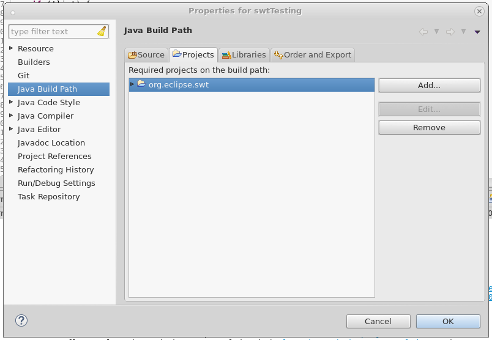
Checking out SWT repos for development
- Install SWT Developer tools (eclipse plugin)
- SWT developer tools automatically builds the custom C code that SWT uses to work with Gtk. Without the tools, you cannot develop SWT. Install the latest from the Eclipse udate site: https://www.eclipse.org/swt/updatesite.php Remember to re-install these tools if you re-install Eclipse (people tend to forget).
- Eclipse git
Eclipse git is used to compare swt files against older versions. Not strictly necessary, but highly recommended.
sudo dnf install eclipse-git
- Check out SWT repos
Check out the repositories holding the SWT sources and binaries. I usually do this from inside Eclipse, but you can also clone things from the command line.
If you don't have committer rights yet, use the git protocol.
e.g
git://git.eclipse.org/gitroot/platform/eclipse.platform.swt.git git://git.eclipse.org/gitroot/platform/eclipse.platform.swt.binaries.git
#+ENDSRC When choosing branches, I select just the 'master' branch.
E.g my gerrit username: lufimtse@redhat.com
- Set the class path to be the GTK one
At first you might get many many errors. You first have to tell the project, that you are on Linux/Gtk for things to compile/run properly.
The generic (Win32/Cocoa/Gtk) setup is described in detail: SWT set up guide.
Specifically for Gtk, you do as following:
- Open 'navigator' view (not package explorer)(View may need to be enabled first)
- under 'org.eclipse.swt' look for the .classfile files
- rename .classpathgtk to .classpath
- clean up projects
- now run a test snippet or ControlExample.java, it should work.
Configure git for review
To contribue back to swt, you need to configure your Repo to be able to push to 'review'.:
Open:
~/git/eclipse.platform.swt/.git/config
- Add review branch: (adjust for your own user name instead of 'lufimtsev')
[remote "review"]
url = ssh://lufimtsev@git.eclipse.org:29418/platform/eclipse.platform.swt.git
push = HEAD:refs/for/master
This is how my .git/config looks like:
[core]
repositoryformatversion = 0
filemode = true
logallrefupdates = true
excludesfile = /home/lufimtse/git/eclipse.platform.swt/tests/org.eclipse.swt.tests/.gitignore
[remote "origin"]
url = git://git.eclipse.org/gitroot/platform/eclipse.platform.swt.git
fetch = +refs/heads/*:refs/remotes/origin/*
[remote "review"]
url = ssh://lufimtsev@git.eclipse.org:29418/platform/eclipse.platform.swt.git
push = HEAD:refs/for/master
[branch "master"]
remote = origin
merge = refs/heads/master
rebase = true
- Under existing master, add 'rebase = true' ::
[branch "master"] rebase = true
- Open Eclipse, under git add your user info ::
[user] name = Lev Ufimtsev email = lufimtse@redhat.com
Usage :
You can push your changes into a review branch via:
git push review
Enable 32/64 bit checking by swt-tools
About 32/64 bit
The java source code has to work on both 32 and 64 bit machines.
On 32 bit machines, calls to gtk that use long in the paramater will not compile.
All such longs should have an /*int*/ annotation after it.
For example:
//This will cause a 32 bit build to fail: void gtk_css_provider_load_from_css (long context, String css) { .. } // ^ missing /*int*/ //Every 'long' should followed by a '/*int*/' like so: void gtk_css_provider_load_from_css (long /*int*/ context, String css)
Enable checks of for 32/64 bit with swt tools.
To avoid missing these things by accident, SWT Tools can autmatically check these things and mark them as errors.
This functionality must first be enabled thou.
By now you should have SWT Developer tools already installed.
- Right click on the 'org.eclipse.swt' project.
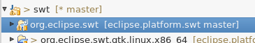
- From the drop down menu, enable 'SWT Tools -> Report 32/64 bit problems'
- Now if you don't include the
/*int*/a warning will be thrown in your the problem view:
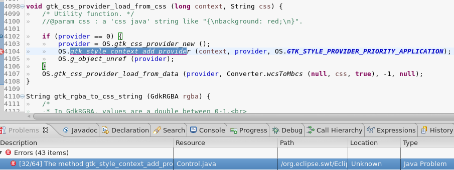
References
Build GTK SO files
About
You checked out two swt repos. SWT & SWT's binaries. The SWT binaries contiained ready-build SO files, ready to use.
Now sometimes swt developers (including yourself) add functions in the OS.java, after which they re-build SO files. When this is the case, if you pull the SWT master branch and try to run a snippet, you will get an unsatisfied-link error.
In this case, you will have to re-build your SO files your self. See below.
Rebuilding SO file
Now I'm not 100% sure on how it's suppose to be done, but the below is how I was taught to do it and I shall pass it on:
Pre-requisites
SWT Tools
Now, for new VMs and for new Eclipse installs, it's common to forget to install SWT tools when starting this. You won't get told that SWT tools are missing, you'll just get weird errors. Double check that they are installed.
Gtk Libs
You will need to install the following packages on your system for build.sh below:
#non-fedora, install these packages: gtk3-devel gtk2-devel libXtst-devel mesa-libGLU-devel libXt-devel //you may also need "X Software Development". #On Fedora, you can auto install all libs needed for Gtk2 building via: sudo dnf builddep gtk2 sudo dnf builddep gtk3 sudo dnf groupinstall "X Software Development"
Step-by-step
I will explain how it's done in general, then I'll point you to my build scrpit which does it for you.
The below assumes that you checked things out into
~/git/
and not another folder.
- Clean org.eclipse.swt project
- (Project -> clean). (Try not to forget this step, it often causes issues if you do)
- Build jars
Inside Eclipse, run build.xml from
org.eclipse.swt.gtk.linux.x86_64/build.xml, make sure the following is selected:build.jars build_libraries
The execution will fail. It's ok. You should get something like: 1
/home/lufimtse/git/eclipse.platform.swt/bundles/org.eclipse.swt/buildSWT.xml:918: The following error occurred while executing this line: /home/lufimtse/git/eclipse.platform.swt/bundles/org.eclipse.swt/buildSWT.xml:890: javax.script.ScriptException: ReferenceError: "importClass" is not defined in <eval> at line number 3
- Navigate to library
Open terminal, go to library bin dir inside your SWT repository:
cd ~/git/eclipse.platform.swt/bundles/org.eclipse.swt/bin/library/
- Set ENV Variables
Set correct export variables: (otherwise you get "fatal error: jni.h: No such file or directory")
export JAVA_HOME=/usr/lib/jvm/java/ export GTK_VERSION=2.0
Re-build wrapper
The below will start the build proccess.
sh ./build.sh
In case you get a missing file like:
fatal error: X11/extensions/XTest.h: No such file or directory #include <X11/extensions/XTest.h>
Then you might not have installed all the required packages. (see pre-requires section above).
You could also query dnf to find out which package you need to install for the required file like so:
dnf whatprovides */XTest.h
You might see some warnings about deprecated functions. Ideally we should strive to fix SWT so that we don't have any of those warnings. It's a slow and gradual process.
Copy new .so's across:
cp -v ~/git/eclipse.platform.swt/bundles/org.eclipse.swt/bin/library/*.so ~/git/eclipse.platform.swt.binaries/bundles/org.eclipse.swt.gtk.linux.x86_64/
Gtk3 build
Repeat steps 1-6 (starting with Clean-projects), but in step 4 export gtk3 version instead of v2.
export GTK_VERSION=3.0
The first time you build Gtk2 SO files, the 2nd time around you build Gtk3 Wrappers.
Now, if you only intend to run on Gtk2 or Gtk3, then building only one of the above suffices.
Automating the build-proccess
I haven't investigated a way to fully automate this, but I've automated part of it.
- Clean eclipse.platform.swt project (I haven't automated this part yet)
I wrote a build script that does the rest: (build.xml's, run build script, copy so's across)
The most up to date version can be found in my repo, see comment for usage. Note, the script uses flags
-2 -gto set gtk2/debugging (more later). https://github.com/LeoUfimtsev/ldts/blob/master/pathscripts/swtjnibuild
References
SWT code base overview and OS.java
Learning SWT
To learn about SWT, try out a bunch of these snippets: https://www.eclipse.org/swt/snippets/
Note, these are available in the SWT repo, search for "Snippet1.java"
org.eclipse.swt.examples project contains lots of examples to try out.
There are many many SWT tutorials online. E.g http://zetcode.com/gui/javaswt/
You should learn at least:
- Set of basic widgets (Button/Label/Table/Tree etc..)
- Layouts (Absolute [i.e no layout]/Grid/Row/Column/FormAttach).
- Attaching listeners. (Mouse move listeners)
General Widget Hierarchy
Widget is the main Widget. Everything else extends Widget.
The most interesting classes are Widget,Control and Composite. Most widgets fork off of these.
As such, it is useful to be aware of fields/methods in parent classes and which methods get overriden by children.
In Eclipse, you can Ctrl+click on a method to see it's super implementation, or derived implementatinos. (very handy).
- Illustration of widget hierarchy

About GtkHandles
Gtk Handles are basically gtk pointers to the widgets.
When you first look at a widget, you generally first look at the handles that are
defined in the widget.
I.e, each SWT Widget is often made up out of several GtkWidgets or has pointers to GtkWidgets.
In general createHandle() is a good place to start when you first look at a widget.
Also inspect *Handle*() methods of the current widget and the widgets above in the hierarchy.
e.g parentHandle(), fontHandle(), childHandle()… These vary in suttle ways.
Handles declarations are inherited. But they are allocated and assigned at a specific widget level.
For example Widget declares handle, Control declares fixedHandle but they never allocate them. Instead for example somewhere down at Combo you might see something like:
createHandle () {
..
fixedHandle = swt_fixed_new();
handle = Gtk_combo_box_text_new();
..
}
For example, here is an incomplete diagram of some widgets and their handles. You may observe that widget has handle defined, and Combo has buttoHandle defined.
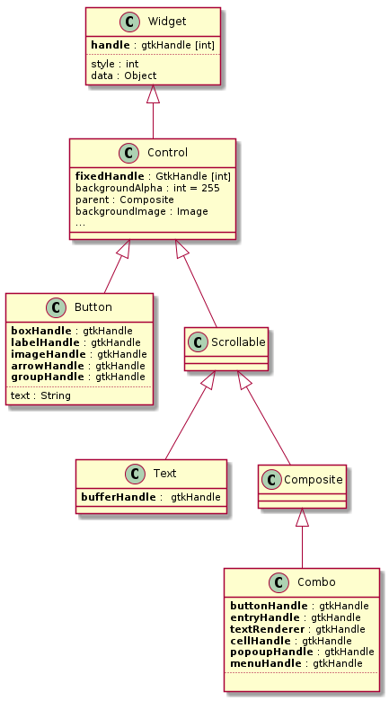
OS.java introduction
About OS.java
All java calls are eventually translated to Gtk to do the actual drawing.
The bridge between java and Gtk is in OS.java. OS.java is a file that we write our self (not generated). It contains many bindings to gtk functions, but not all of them. Sometimes we have to add method signatures in there manually for new functions.
In my case, it is located here in the package path:
/org.eclipse.swt/Eclipse SWT PI/gtk/org/eclipse/swt/internal/gtk/OS.java
But the easiest way to find it is Ctrl+shift+r, (find resource) and look for OS.java
There are several types of code in this file.
- Method bindings
- These are typically wrapped in a lock:
/** @param widget cast=(GtkWidget *) */ public static final native void _gtk_drag_dest_unset(long /*int*/ widget); public static final void gtk_drag_dest_unset(long /*int*/ widget) { lock.lock(); try { _gtk_drag_dest_unset(widget); } finally { lock.unlock(); } }
- Constants and ENUMS
C constants and C Enums are delcared as plain ints. like so:
public static final int GTK_SCROLL_STEP_UP = 6;
Note, if you need to add a C enum to OS.java, C ENUMS (Enumirations) begin at 0.
Do note, that the javadoc is parsed by the jni. So be careful about what you put in there.
- Static Strings translated to C-bytes
Gtk uses some static strings in things like registring event handlers. We translate java strings into C strings like so:
public static final byte[] key_press_event = ascii("key-press-event");
- the Gtk Version
A lot of SWT code is wrapped around the if-checks that make sure code runs only on certain GTK versions. The version code is defined in OS.java like so:
public static final boolean GTK3 = GTK_VERSION >= VERSION(3, 0, 0);
OS.java compilation to os.h os.c etc..
SWT tools compiles OS.java down to a set of files like os.c.
- There are two oscustom.c's
Be attentive, there are two sets of library files like oscustom.c. This is because one set is the source, the second is copied over during compiliation.
Source folder is here:
~/git/eclipse.platform.swt/bundles/org.eclipse.swt/Eclipse SWT PI/gtk/library/os_custom.c
This is where you make changes if you want to make changes.
Destination (bin/compiled) folder is here:
~/git/eclipse.platform.swt/bundles/org.eclipse.swt/bin/library/os_custom.c
Don't edit these files, they are auto-generated.
It is important to understand the difference because later you will be making changes in the source folder, but link the debugger to the source code in the destination/bin folder.
- Auto-auto generated vs manually written
- Do note, inside the source folder, some of the files we adjust by hand and some of these are generated.
The content of
../library/..is as following: - os.c
- This file is automatically generated by SWT Tools. It contains native bindings.
- os.h
- This file we adjust manually. It contains special signatures.
os_stats.*- These are auto-generated.
os_custom.h- This file we adjust manually. We add new function signatures here when we add a new method to OS.java.
os_custom.c- This file we adjust manually. This contains our custom code, such as the SWTFixed container.
In later parts of this guide, I will explain how to add new methods to OS.java. For now keep the above in mind.
Submission of os.h os.c to gerrit
When SWT Tools re-generates os.h os.c etc, they may appear in your git staging area. When submitting a patch, include these in the submission.
SWT Code style notes
Java doc notes
- No platform dependent info
No technical details that are platform-specific go into Java docs. (e.g no gtk-specific items).
But putting them in regular non-javaDoc (green) comments is ok.
Method naming
- Gtk functions
- Any gtk-specific functionality should be
gtk_function_name. Even if it doesn't match one-to-one to a gtk function. (do try to avoid conflicts thou).
Any other naming should be general enough to be translated to other platforms.
Method access modifiers
Methods should in general not have modifiers unless private/public.
void myMeth() …
Avoid 'protected' unless you're sub-classing things.
SWT Bug naming conventions
- Cheese
- This refers to garbled text or messed up pixels E.g: https://bugs.eclipse.org/bugs/buglist.cgi?bug_status=RESOLVED&bug_status=VERIFIED&bug_status=CLOSED&classification=Eclipse&component=SWT&f0=OP&f1=OP&f3=CP&f4=CP&j1=OR&list_id=11591590&product=Platform&query_format=advanced&short_desc=cheese&short_desc_type=allwordssubstr
- DnD
- Usually used for Drag and Drop.
- Win32/Cocoa/Gtk
- These you will see as prefixes in bug-titles. Win32 is windows. Cocoa is mac, Gtk is usually linux.
SWT Fixed Container
About
SWTFixed is custom C code that we include in SWT. It is a container that allows us to place SWT Widgets with absolute positioning so that subsequent widgets are drawn beneath each other. (In GtkFixed container, subsequent widgets are drawn on top of previous once). This is achieved by using the gtkwidgetshowunraised() method, (show widget, but do not raise it up).
As such, the swtfixedforall() method that traverses the code is a bit different than standard forall() methods.
It was introduced in SWT during the Gtk2 to Gtk3 migration, because the old GtkFixed container was removed in Gtk3.
SWTFixed is defined in os_custom.h and os_custom.c. In my case they are here:
/home/lufimtse/git/eclipse.platform.swt/bundles/org.eclipse.swt/Eclipse SWT PI/gtk/library/os_custom.c
Every Widget is based on swt fixed
If you inspect a widget, in almost every createHandle() method, you will see the creation and allocation of swt fixed like so:
fixedHandle = OS.g_object_new (display.gtk_fixed_get_type (), 0); OS.gtk_widget_set_has_window (fixedHandle, true);
This means that SWT is creating a new instance of the SWT Fixed container. Normally it then assigns something to the handle variable puts the widgets inside it.
Normally in Gtk you create a drawing surface (GdkWindow) [note the 'd'] and draw one or several widgets inside it. In SWT, we create a new drawing surface (GdkWindow) for every single widget. This is very ineffective but gives SWT more control about drawing order and permits easier implementation of overlapping widgets.
At this point it might be beneficial to understand that a GdkWindow is a drawing surface, where as a 'GtkWindow' [note 't vs d' difference] is a shell with decorations like 'X', '-' and it interacts with the X drawing system. More will be dissucssed in the Gtk sections that follow.
Technical C Details
You might want to read a bit on how to implement a custom widget in GTK. Then swtFixed will be much easier to understand. It's mostly code copied from other generic containers with a few tweaks here and there.
As a note:
- SwtFixed extends GtkContainer, i.e inherit's all it's functions. This can be observed by the swtFixedPrivate struct, it has a reference to GtkContainer meaning that that is it's parents.
- Supports multiple children because the child object is a list.
It overrides some function, this can be observed in the init() function, which assigns functions to pointers. E.g
container_class->forall = swt_fixed_forall;
You should see the swtfixedclassinit(..) function for details.
SWT and Gtk Versions
About Gtk Versions
In SWT Land, the version of GTK that you're running on can make a big difference in how your snippet will behave. This is especially true for all things CSS related because there are many changes in that area.
It's not just the difference between Gtk2 & Gtk3, but keep an eye on the differences between:
- Gtk3.8 (RHEL7)
- Gtk3.10 (CSS Introduced) (many things broke here)
- Gtk3.12
- Gtk3.14 (Fedora 21)
- Gtk3.16 (Fedora 22) (removal of stock icons, things break here) etc…
As such, you need to configure a setup where you can run/test on various Gtk Versions.
SWT's Gtk Version Support
At time of writing Gtk 2 & 3 are both supported in SWT.
To find out which exact versions are currently supported by SWT, inspect gtk's Display.java:
And search for code like this:
/* GTK Version */ static final int GTK3_MAJOR = 3; static final int GTK3_MINOR = 0; static final int GTK3_MICRO = 0; static final int GTK2_MAJOR = 2; static final int GTK2_MINOR = 18; static final int GTK2_MICRO = 0;
This means Gtk3.0.0 onwards and Gtk2.18.0 onwards are supported.
Once in a while, you will come across bugs where the version is bumped. Keep an eye on this by following
platform-swt-inbox@eclipse.org in bugzilla. E.g https://bugs.eclipse.org/bugs/show_bug.cgi?id=446454
Switching snippets to run on either GTK2 or GTK3.
You often want to test if something occurs only on Gtk3 or if it occurs on Gtk2 also.
To do so, launch a snippet. Close it and then edit the run configuration.
Under environmental variables, add: SWT_GTK3=1 to run in Gtk3 mode. (or 0 for Gtk2 mode).
Similarly, if you want to run your main Eclipse in Gtk3, in bash you can:
export SWT_GTK3=1 eclipse
Gtk version on your system
If you want to find out which version of Gtk is on your system, execute:
pkg-config --modversion gtk+-3.0
(pkg-config needs to be installed if first)
E.g:
RHEL7: 3.8.8 f21 : 3.14.9 f22 : 3.16.1
Getting gtk version programtically in java/SWT
Once you'll compile multiple Gtk versions (Gtk 3.10, Gtk 3.12, Gtk 3.14 etc..), then you may want to set the title of your snippet to reflect the gtk version.
This is very useful to ensure that your snippet is running a specific version of GTK.
//Print Gtk version. System.out.println("GTK Version: " + OS.gtk_major_version() + "." + OS.gtk_minor_version() + "." + OS.gtk_micro_version()); //I have a function in my set of test-widgets that get's me the gtk version. public static String getGtkVersion () { return OS.gtk_major_version() + "." + OS.gtk_minor_version() + "." + OS.gtk_micro_version(); } //Normally I set the shell-title to the Gtk version: shell.setText (ShellTest.getGtkVersion ());
Getting gtk version versions Eclipse is running on
When you fire up Eclipse, sometimes you want to check which version of Gtk things run on. To do this, see my blog entry: https://coffeeorientedprogramming.wordpress.com/2014/10/27/how-to-tell-if-you-are-running-eclipse-on-gtk2-or-on-gtk3/
Gtk Versions on Fedora/Red Hat
Sometimes you might have to find out which version of GTK was running on which Fedora/Red Hat.
List of GTK versions in general: http://en.wikipedia.org/wiki/GTK+
List of GTK`s in fedora: http://koji.fedoraproject.org/koji/packageinfo?packageID=10393
Red hat equivalent: https://brewweb.devel.redhat.com/packageinfo?packageID=33894
- Compiling several gtk versions and testing with them
About
Your snippet might work well on Gtk3.14, but might will fail on Gtk3.8. Or someone's code will only work/fail only on some specific version of Gtk. You need to be able to run snippets on specific versions of gtk.
You could of course set up 5 VM's with various Fedora/RHEL versions, but it would be tedious to test things.
This is especially true for CSS & style related changes.
To ensure cross-version functionality, you should test on many different versions.
General testing strategy
In general, during bugfixing and development, I will test only on Gtk3. When I get closer to committing things, I'll give it a quick test on Gtk2 also.
If it's a small patch, then usually testing only on Gtk2/Gtk3 prior to commit is ok.
If the patch is significant or has code that has potential to behave differently in various Gtk versions, I will test on most of the major gtk versions. (Gtk3.8, 3.10, etc..).
For theaming related patches, me (working for Red Hat) also test on a RHEL 7 vm. But this is only for some patches.
As you can observe, I don't test every patch on every gtk version. But sometimes I do reach out and test on many different versions and on different OS's.
Versions to test on
In general, you should test on major releases, e.g:
Gtk2.24 //latest Gtk2 is ok. Gtk3.8 //RHEL 7 lives here Gtk3.10 //Ubuntu 12 lives here. Css was introduced. Gtk3.12 //This version is not very eventful to be honest. Gtk3.14 //Fedora 21 lives here Gtk3.16 //Fedora 22 lives here
To find out which versions are considered Major, see the Reference manual: https://developer.gnome.org/gtk3/
It might be a good idea to have at least a vague idea of what changed in the most recent 3-4 major versions. (read release notes).
Set up for Multiple GtkVersions
Native Gtk compiling and Gtk in VM's
You can compile certain gtk versions on your machine, those that are 'close' to your current version. (see compiling below).
But very old and very new Gtk versions have a lot of dependencies making them hard to build. I.e, you will get a lot of "missing package/file xyz." messages. E.g on my system (F21) I can only build as far as gtk 3.14 and as low as gtk 3.10.
For very old and very new Gtk versions, I use virtual machines with Fedora/RHEL.
For VM's, you have to configure the full SWT development setup, including Eclipse, SWT tools and the swtjnibuilt2/3 script. To ship the patch to the vm's, I usually submit the patch to gerrit but in the patch note I leave a note saying that it's not ready for review yet. After testing, I amend the patch note.
In the patch, I usually leave a note of how I tested the patch. This is useful for people who review the patch. E.g: https://git.eclipse.org/r/#/c/45415/
Bug 461616 - [GTK3] Combo improvements in background/foreground for gtk3 (fix 2) - Combox with READ_ONLY now get background as well. - Menu 'text' gets background. But GtkTreeMenu is inside a private struct inside GtkComboBoxText so we can't theme it's background. Tests: - [X] Gtk 3.8 - [X] Gtk 3.10 - [X] Gtk 3.12 - [X] Gtk 3.14 - [X] Gtk 3.16 Change-Id: Idc315a02dbdb8fbec3f699e39735903709e1ed8c Signed-off-by: Leo Ufimtsev <lufimtse@redhat.com>
You may observe I keep my configs and tools in git-hub repos. e.g: https://github.com/LeoUfimtsev/ldts this makes it much easier to migrate my setup to multiple VM's or my home machine.
Example setup
Currently, I use the following setup:
Gtk2.24 -> my machine has this gtk version. I use with SWT_GTK3=0 flag. Gtk3.8 -> I have a RHEL 7 VM for testing Gtk3.10, Gtk3.12 -> I compiled Gtk on Fedora Gtk3.14 -> My machine runs this version of Gtk. I use with SWT_GTK3=1 flag Gtk3.16 -> I have a Fedora 22 VM for this.
Gtk from sources
Compiling Gtk+
- Getting dependencies
First check that you have all the neccessary packages.
An easy way of doing this (on Fedora at least) is using:
sudo dnf builddep gtk+
In addition, you may want to check that the following are insatlled:
sudo dnf install pkg-config glib3 make gcc gdk-pixbuf2 gdk-pixbuf2-devel glib-devel glib2-devel
- Getting the source code
Git hub repo for GTK is in the link below, the clone link is at the bottom:
https://git.gnome.org/browse/gtk+/
The clone link comes in git/https/ssh protocol. I prefer to use https as it's less painful.
cd ~/git git clone https://git.gnome.org/browse/gtk+
- Check out version you're interested in
Either master or a tag of a version: (e.g 2.24, 3.10, 3.4, 3.8), E.g:
git checkout gtk-3-10
- Build this business
The first time you might want to run each command one-by-one. Sometimes you might be missing a package and if so, autogen will usually tell you. It's useful to look into autogen.sh to get the exact name of the package that you're missing. then install it (sudo dnf install Yourpackage).
./autogen.sh && ./configure --enable-x11-backend --enable-wayland-backend --enable-debug=yes && make CFLAGS="-g3 -ggdb3 -O0" -j4 && echo "--- all done"
- Note about Theaming
By default, with the above build, gtk will look very plain. If you would like it to use your system theame, you can add the –prefix=/usr argument:
./configure --prefix=/usr --sysconfdir=/etc --enable-broadway-backend --enable-x11-backend --disable-wayland-backend
But do note, that older versions of gtk might not work well with the theme on your system. I only use this for some rare theaming bugs.
- Note about debugging
If you intend to debug your gtk later or launch Gtk with debug flags, you can also add the debug flag:
--enable-debug=yes
But the above doesn't remove optimizations, so I prefer to hard-code the CFLAGS, adding debugging and removing optimization:
make CFLAGS="-g3 -ggdb3 -O0"
- How to tell if build was good
In geneal, in shell, if you run:
echo $?
and if the output is '0', all is well. A higher number is an error of some sort.
Example of a successful build:
make .... <build output> echo $? 0
In addition, there should be a .libs folder inside:
../gtk+/gtk/.libs
- Troubleshooting
- you might get compile errors for missing libraries. See getting-dependencies section above.
- you might have them installed, but compiler can't find them.
find out where they are installed:
rpm -ql LIBRARY
set compile path to location, e.g: //Not fully tested.
C_INCLUDE_PATH=/usr/include/glib-2.0/ #LD_LIBRARY_PATH might be better.
- if you can't compile a newer version, try an older version.
Copy compiled gtk for re-use
Once you've compiled a version, it might make sense to copy it to another folder so that you don't have to re-build it each time.
Strictly speaking, you just need the '.libs' folder. But I like to copy the whole gtk+ folder.
E.g
mkdir ~/src #if src doesn't exist. cp -r ~/git/gtk+ ~/src/gtk3_10
(it should include the gtk/.libs folder)
Tie newly built gtk into SWT
Once above is done, you can change the Eclipse run configuration to point to the newly compiled gtk.
- Env Var setting
Open environmental variable section of your run configuration, add something like:
LD_LIBRARY_PATH = ~/src/gtk3_10/gtk/.libs
Example: 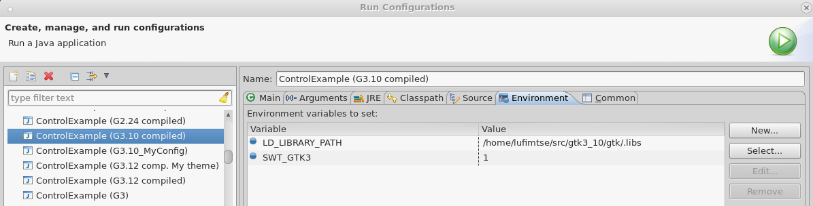
References
//Useful archvwiki: http://www.linuxfromscratch.org/blfs/view/svn/x/gtk3.html
//official compiling notes: https://developer.gnome.org/gtk3/stable/gtk-building.html
Adding custom functions to OS.java
Introduction
If you haven't read, first read OS.java introduction.
Note: For java code I referer to "methods". For C code I refer to "functions".
The general process of adding new functions is:
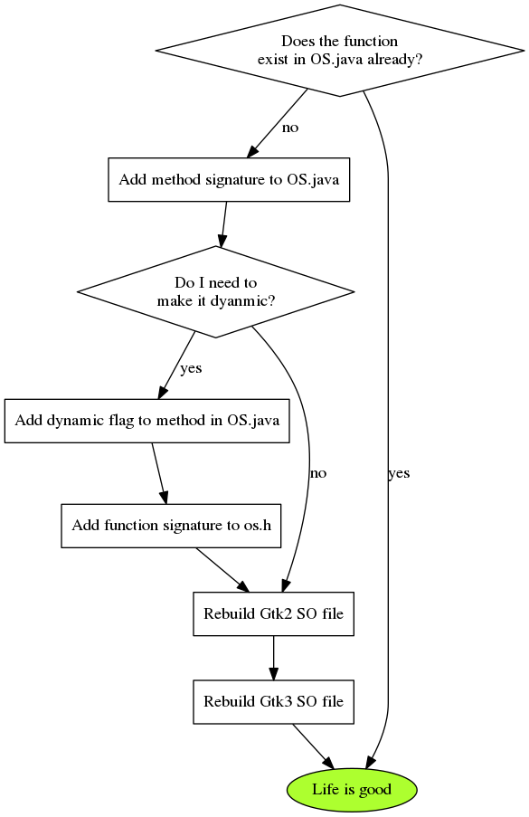
- Adding new functions
- New functions are introduced in Gtk3 and old functions are deprecated.
In these situations we need to manually add these method signatures to OS.java and
os_custom.h. - Dynamic vs static functions
Dynamic functions are not build during compile time. They are only called at run time. This allows us to have Gtk3 functions in a Gtk2 build or run deprecated functions only in gtk2 (or some specific gtk* version range).
dynamic functions have an annotation
@method flag=dynamic- Re-building SO-files
- After you add new functions to OS.java & os.h, you will need to rebuild the SO file for Gtk2 & Gtk3.
Dynamic methods and os_custom.h
Before adding a new function to OS.java, you should understand dynamic functions.
- About dynamic methods/functions
If you inspect OS.java and look at the javadoc of some of the functions, you will notice a flag like this:
@method flags=dynamic
This means the command is not compiled, but called dynamically on the fly (runtime).
This is useful for functions that are specific to certain versions of gtk. E.g some functions were only introduced in Gtk3, as such those won't compile on a gtk2 build. As such you make those dynamic. Similarly, some gtk2 functions are deprecated in gtk3 and so that we only use them in gtk2, thus we make them dynamic.
Note: not all functions have to be dynamic. You should only make them dynamic if there is a need for it. I.e, in general you should only make functions dynamic if they have to be dynamic; this is because if errors do exist, this post-pones them from compile time to run time.
- Determine if function should be dynamic
It is important to throughly check if the function that you are about to add is specific to Gtk2, or Gtk3 or can be included in both.
Be attentive, sometimes there are bugs in the documentation, i.e it might be missing a 'since 3.xyz' flag.
The safest way to ensure functionality, is to check both the latest Gtk3 and Gtk2 documentation and read up about the function in both places.
The easiest way to do that, is to find the function, then change the '3' to a '2' in the url https://developer.gnome.org/gtk3/stable/GtkWidget.htm https://developer.gnome.org/gtk2/stable/GtkWidget.ht
For example, wtkwidgetsethalign() is defined in the Gtk3 documentation and there is no 'since 3.0' flag. However, upon checking of GtkWidget in gtk2, I found that the function doesn't exist there.
Sometimes the function is ok to use in the current stable built, but got deprecated in the most recent unstable build. So check unstable documentation prior to adding the function also. (replace stable with 'unstable' in the url).
Another indication of functions not being present in certain gtk versions is that you might get an 'implicidly defined function' in the build.sh output.
Now you should have deterimined if the function should be dynamic or not.
- Steps to make a function dynamic
- Add the
@method flag=dynamicto the javadoc of the function. Add the signature to
os_custom.h. (i.e look at the other signatures, copy & adjust).Caution!, there is a postfix 'LIB' at the of the function:
#define gtk_widget_get_preferred_size_LIB LIB_GTK ^-- Notice post fix "_LIB"
The 2nd part of the Define 'LIBGTK' is a pointer to which library the function comes from. In this case prefered size comes from LIBGTK. But this can be LIBGDK or other libraries. Check the gtk docus to find out where the function comes from.
- Rebuild So file. Make sure there are no errors/warnings related to that function.
- Add the
Adding custom Functions to OS.Java
Adding your own method signature.
- Check if the function should be dynamic (see above
- In OS.java add your signature so that it matches the other signatures
An easy way is to find a method with similar paramaters and copy its signature.
Be attentive to pointers with long. They should have an int cast after them so that things compile on 32 bit machines.
long /*int*/
You should Enable 32/64 bit checking by swt-tools
- Manually edit
os_custom.h If a function is dynamic, manually edit
os_custom.hand add the new method signature in there.#define gdk_disable_multidevice_LIB LIB_GDK
If it is not dynamic, this step is not necessary.
- Rebuild your so file
What does SWT tools do
SWT tools will parse OS.java and generate os.c for you. Note, some files are generated, and some we edit manually, see OS.java compilation to os.h os.c etc..
To force OS.java to be rebuild, clean your projects.
Adding custom C enums to OS.java
C Enums are enumirations. I.e, {Red,Green,Blue} is turned into {0,1,2}.
C enums don't map onto Java's enums. Instead, to add an enum like GtkAlign to OS.java, declare some static ints like:
/** * ## Enums, extracted from OS.java (I once had to add this one in). */ /** GtkAlign enum */ public static final int GTK_ALIGN_FILL = 0; //Enums start at 0. public static final int GTK_ALIGN_START = 1; public static final int GTK_ALIGN_END = 2; public static final int GTK_ALIGN_CENTER = 3; public static final int GTK_ALIGN_BASELINE = 4;
And when you declare a function, delcare the java-doc paramater cast like this:
@param gtkalign cast=(GtkAlign) // note (GtkAlign) with no pointer, not (GtkAlign *)
This will allow the native call to understand that the paramater is an enum.
Appendix: Special custom bindings
In some rare situations you might have a function that you can't easily make dynamic. E.g an overloaded function that has structs that are supported only in Gtk2/Gtk3. In java you can overload a function, but in C you cannot.
In such situations, we need to inspect the generated os.c, find the "NO__.." line that is genreated by swt tools and put it into os.h.
Example: gobjectset
Suppose you have:
_g_object_set(long /*int*/ object, byte[] first_property_name, GdkRGBA data, long /*int*/ terminator);
where GdkRGBA is specific to gtk3.
Add the method signature to OS.java. Clean the project and attempt a build. You will get a build error about GdkRGBA paramater in gobjectset.
Now search os.c for "NO__ …. g object set ", you will find something like:
NO__1g_1object_1set__J_3BLorg_eclipse_swt_internal_gtk_GdkRGBA_2J
Then in os.h, near ~ #define NOGdkRGBA you would add:
#define NO__1g_1object_1set__J_3BLorg_eclipse_swt_internal_gtk_GdkRGBA_2J
Meaning: (not very interesting as this is SWT genreated, but FYI:) J - long I - int 3B - byte[]
NOTE: if there is a 'J' - long in the signature, you need to add a 2nd line with 'I' ints, like:
#define NO__1g_1object_1set__I_3BLorg_eclipse_swt_internal_gtk_GdkRGBA_2I //J*->I #define NO__1g_1object_1set__J_3BLorg_eclipse_swt_internal_gtk_GdkRGBA_2J
Alexander Kurtakov taught me this business. If you get stuck here, consider getting in touch with him for help.
About Gtk
About
Often you will run into a situation where you have to write native Gtk code to see if the issue is in Gtk or in SWT.
You should become comfortable writing and compiling Gtk3 (and maybe gtk2) native code.
Brief overview of Gtk
- Caution : Gtk Vs Gdk
It's not all "Gtk". Some functions start with gDk and some with gTk. Be attentive to the prefix and seek out the relevant documentation.
In general, Gtk is build on top of the underlying Gdk.
For example for Drag and drop, there are Gdk and Gtk functions like:
gtk_drag_cancel () gdk_drag_abort ()
https://developer.gnome.org/gtk3/stable/gtk3-Drag-and-Drop.html
https://developer.gnome.org/gdk3/stable/gdk3-Drag-and-Drop.html
- General structure of Gtk 2
In fact, Gtk is a composition of multiple libraries. But in most cases, Gtk/Gdk/Glib is all you need to know unless you're working on some drawing related issue.
//Gtk composition: GKT+ |-> X11 (Xlib) //Window manager |-> Glib () |-> Glib () |-> GObject () //Object-oriented framework |-> GModule () |-> GThread () |-> GIO () |-> Cairo () //2-D Vector renderer |-> GDK () //wrapper around low-lvl graphics. (fonts/dnd,cursors) |-> GdkPixbuf () //image manipulation. |-> Pango () //Text/Font |-> ATK () //Accessibility toolkit. //Structural overview +------------------------------- ----------+ | Your Application | +------------------------------------------+ | GtkAda | | +-----------------+ | | | GTK | <<< Useful to know. | +----+-----------------+----+ | | | GDK | <<< Useful to know. | +----+------+ +----------+----+ | | Pango | | Cairo | +----+-----------+----+----+---------------+ | GLIB | X-Window / Win32 | +-------- ^ -----------+--------------------+ | Glib has some useful datastructures, e.g lists/hash tables. //From Gtk to your app: Xlib <-> GDK <-> GTK <-> Your App //gdk is intermediate
Learning Gtk
Good places to get you going are:
Quick tutorial:
This tutorial might not feel 'satisfying' or might not explain things, but it's a good place to get a general picture: http://zetcode.com/tutorials/gtktutorial/
The gtk2 book: (Good stuff)
The only (decent) book on Gtk at the time of writing covers Gtk2. But it's good to learn about GTK2 and in paralalel look at how things changed in Gtk3. Gtk2 and Gtk3 are relativley similar. More info here: http://www.gtkbook.com/ It's good to read the book and compare the functions/structs to Gtk3. This way you learn both frameworks.
There is also the official Gtk3 Getting-started-guide:
However, it is somewhat dry I found. I never read it except for the DnD part: https://developer.gnome.org/gtk3/stable/gtk-getting-started.html
- There is also a very good book written by Red Hat Labs: "GTK+ / Gnome Application Development, Havoc Pennington, Red Hat Advanced Development Labs". It is the only book I could find that had good high-level theory on Gdk development and it has some nuggets like implementing a custom widget (which is useful to understand swtFixed container).
- There are lots of little papers scattered around the web also. I google around for those.
Gtk Api documentation
- Gtk2 & Gtk3 Documentation
There is (Gtk3|Gtk2) && (Stable|Unstable) documentation, to switch between them change 2 -> 3, stable -> unstable. E.g
https://developer.gnome.org/gtk3/stable/GtkWidget.html
- Googling Api
I usually Google with "Gtk" and "ref" in the prefix. This usually get's me to the api.
gtk<Version> ref <Key word> e.g gtk3 ref gtk_combo_box_text gtk2 ref gtk_combo_box_text
- Note about unstable api
You should consider browsing unstable api more often than stable api. Often you will find that some functions get deprecated in latest versions or new functions are added to add missing functionality. Or simply the documentation changes.
The general rule of thumb is that before adding new method to OS.java, double check the unstable documentation for that function first.
To see a list of available versions, go here and click on the newest:
Getting help
You will get stuck in GTK land sometimes.
Good places to get help are:
- gtk+ irc channel
- Folks are very helpful here. I often got responses very quickly. Mostly good for quick little bits and general wisdom.
- gtk+ bugzilla
- If you think you have come across a bug, or need some official statment from GTK folks about some functionality (e.g if something doesn't work in SWT, have a link to a gtk bug that explains things). Posting a bug to the GTK bugzilla is the way to go. E.g: https://bugzilla.gnome.org/show_bug.cgi?id=747798
- Mailing list
- I didn't get many responses when I asked complex questions, but for small & straight forward stuff, people respond quite well: See: http://www.gtk.org/mailing-lists.php
- Stack overflow
- For your broken snippets. Tag things with gtk+ http://stackoverflow.com/
Gtk Source code
You should check out the Gtk repository. Often you will look through the Gtk Source
code to find things that are not in their Documentation.
Usually I look for the macros that cast things e.g GTK_CONTAINER(container) or
I look at *.h files to see how GtkWidgets are made up.
C/C++ Development in Eclipse
About
To write little Gtk Snippets in Eclipse, you can use Eclipse's CDT (C Development Tools). Before doing so, you should get comfortable doing basic C development in Eclipse.
In this section we briefly touch on how to write small C snippets of code in Eclipse.
Getting Started
- Installing
You need to install the CDT plugin for eclipse.
sudo dnf install eclipse-cdt
Or find an Eclipse version that has CDT build in, or google around on how to install it as a plugin. You can tell if it's installed by creating a new project and seeing if C/C++ project is avaialble.
- Getting to know CDT
- Try a basic hello-world C project to get a feel for it.
- Open Help -> Help Content -> C/C++ Development.
- Read the Getting Started guide. It explains how to make new projects.
- Make a test C project to play around with. E.g make a hello world program.
- Read and try things in this guide: https://www3.ntu.edu.sg/home/ehchua/programming/howto/EclipseCpp_HowTo.html
You should ideally spent a number of hours getting to know Eclipse with CDT, as you'll probably be using this a lot in the future to navigate the Gtk code base.
A note about Automake/Make file/Executable C projects.
When you create a new C project, you will have an option of several project types.
The main types are:
- GNU Autotools
- This is often used by large open source projects, e.g Gtk. It ties making of projects together with developer tools like valgrind.
- Executable
- This is a basic project where the make file is managed for you. This is good if you just want to write some C code and try it out.
- Makefile Project
This is for when you manage your own make file. This is useful for existing projects that have make files that you need to manage yourself, or for when you want to learn about makefiles. I usually use this for my toy projects. To enable debug in makefile projects, you need to add the debug flag and remove optimizations:
-g -O0
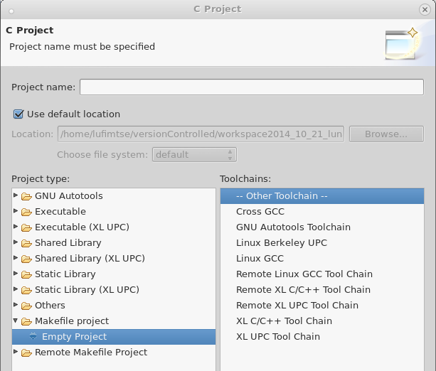
Useful Eclipse Code Navigation and editing techniques for C
You should try all of the above:
- switch between .h and .c files
- You acn press Ctrl+Tab to switch between source code and header units.
- open call hierarchy
- I remap this to F1. List all the functions that call this method. Also works on fields of a struct, show all places that reference this variable.
- quick outline
- (ctrl+o)
See a list of all functions. Search them.
Use regex like
*list*to find getitemlist(). - open resource
- Navigate menu > open resource or Ctrl+Shift+r.
This is very useful to find or 'jump' to a file. Supports regex like
*file.c - refactor
- (shift+alt+r) Rename variables and functions.
- build & run
You can configure a build & run in one hotkey:
You should create a run configuration (see help->help content->C/C++Development ->getting started > Creating a simple application).
Enable 'auto-build'. Now tie a hotkey to "run-last-launched" (F12 in my case, but maybe F11 in yours).
- open element (Ctrl+Shift + t)
- Useful for finding functions/structs/unions/enums in the source code base.
Before you proceed
You should be able to:
- Jump between the function call and the function definition. (call hierarchy).
- Search the outline.
- Know how to create a run configuration for a C project.
- Be able to debug a C application from inside Eclipse, step by step and see the content of variables.
Import Gtk Sources into Eclipse for browsing
About
You can pull Gtk sources and tie them into your Eclipse, so that you can navigate/read the source code easier.
I then use the Gtk source code as a way of reading Gtk api. Compared to the web-documentation, reading the source code allows you to quickly jump to struct definitions and see examples of how/where functions are called via call-hierachy.
You also see how certain objects 'relate' to each other, which you sometimes don't see in the w web-docu. You will often find that many functions are just wrappers around other functions.
The most frequent use-case is when I write a Gtk snippet, I can just jump to the function definition and read the docu without plowing through the web-documents.
Git repositories to check out for Gtk development.
Gtk is made up of several libraries, you need to pull all of them onto your system otherwise some of the code will be underlined red.
Check out repositories:
Checkout the repos below and add them to your eclipse. For copy & paste convenience:
cd ~/git #this is where git repos should ideally be placed. # Gtk (includes gdk) git clone https://github.com/GNOME/gtk # Glib git clone https://github.com/GNOME/glib.git # gdk-pixbuf: git clone https://github.com/dieterv/gdk-pixbuf.git # cairo drawing library: git clone git://anongit.freedesktop.org/git/cairo git clone git://anongit.freedesktop.org/git/pixman.git
- Import git repositories into Eclipse (or clone from within Eclipse). (not yet as project, just import the repos)
Import projects into Eclipse.
- About
- I usually import the projects from their git hub-repositories as oppose to directly from file, because this way I can use the compare-to-previous revision feature of egit. I.e, import -> git -> new project etc…
- A note on Autotools projects
- You can tell if a project (e.g gtk) is an 'autotools' project by looking into the project folder and inspect the existing files. You may see files like "configure.ac". Alternativeley, make a new autotools project, see what it looks like & compare.
- Importing projects from git to Eclipse
- You should have the repos checked out: (gtk+|glib|gdk-pixbuf|pixman|cairo).
- Next right click on each git repository and import from it.
- You should import it as "New C project" (and not exiting project).n
- Project type "GNU Autotools" -> Empty Project"
- uncheck 'Use default location' and select location in your git hub. (root of the .git)
- Referencing projects
- Referencing projects allows Eclipse to know that projects are related.
Normally, triggering to build one project triggers a build of other projects.
It also get the C indexer to read symbols properly.
- go to the imported 'gtk+' project.
- Open 'project properties' -> C/C++ General -> Paths and Symbols -> References
- cleck: glib && gtk-pixbuf && cairo && pixman
- click on ok.
- rebuild the index
- In the project explorer, right click on the 'gtk' project -> index -> rebuild.
- Now all errors should be gone. (maybe except one like
("cannot find install-sh, install.sh, or shtool in build-aux "."/build-aux") ( –>> to fix, run "reconfigure from repo, autotools will rebuild the project bits).
now when you make a Gtk application in Eclipse, you should be able to jump to the definition of a function.
- Note about building Gtk in Eclipse
- In general it's possible to build Gtk from inside Eclipse with autotools, but I prefer to do it in the command line as I find it easier to specify neccessary flags and chain operations together through scripts.
References
- build in help
- Eclipse -> help -> help content -> C/C++ development
- C++ in eclipse post
- https://www3.ntu.edu.sg/home/ehchua/programming/howto/EclipseCpp_HowTo.html
- Gtk source code download page
- http://www.gtk.org/download/
- RGrunber's blog post
https://rgrunber.wordpress.com/2012/04/25/adding-header-files-to-your-cc-project/
Writing & Debugging Gtk apps in Eclipse
Prerequisites
- Update Eclipse fully (sudo dnf update eclipse).
- install
pkg-config,gtk3-devel>k2-develpackages if you haven't done so already. - Insatll Eclipse
pkg-configplugin from market place (if not installed already).- You might have to install market place first if it's missing from the help menu. -> (install new software, select all sites, search for 'market' install 'Marketplace Client').
- Pkg config converts things like 'gtk-3.0' to all the library includes of gtk3
Cloning my existing repository.
You can clone my repo if you wish, it has some useful Gtk snippets. Although I would suggest you to manually create a project (see below) and put it into your own git repository.
FYI: My repo is here: https://github.com/LeoUfimtsev/LeoGtk3/tree/master
You can clone or checkout the master branch. It has an Eclipse project that you can import into your workspace.
If you already have Gtk/Gdk/pixbuf etc.. imported, then the project should be able to compile/run Gtk snippets, and you should be able to look up referenced functions/types in the Gtk source code.
Note, this is a make-file project where I manually adjust the makefile.
If there are issues with this approach, try the below instead.
Manually create a project.
There are a few tricky bits to consider when creating a Gtk project.
Header and source code files
Normally, if you create a Gtk+ project you include the "usr/include/gtk+" paths. The problem with that is that "/usr/include/gtk" only contains header files, not the .c source code files from the git hub repo. As such you won't be able to see the "guts" of gtk, which are often very useful and essential for when you're debugging swt.
If you point your include to the gtk+ git hub repo instead, then it might not compile unless you go thourgh the effort to compile the related libs (Glib/pixbuf etc…), which is quite a bit of effort. I.e, it's easier to use the gtk that is build in with your system for compiliation.
The solution (which at least works for me) is to point the compiler to the system "usr/include" path (1*) and point the indexer to the gtk+ gitHub repository (2*). This way, when you are compiling, all will compile well and when you are writing code you easy quick-lookup to the gtk source code without having to compile all of this business.
Making a new C Executable project
- Create a new Eclipse C Project (not C++), select Executable project, with "Hello World GTK+ Project" template:
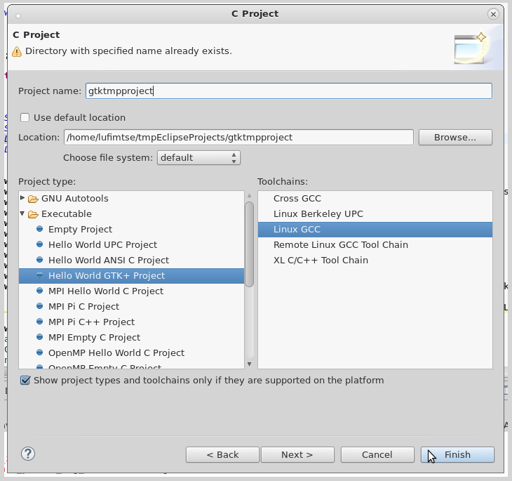
- If this template is missing, you need to install 'pkg-config' plugin into Eclipse first. (see Prerequisites). Also it's missing if you selected 'C++' as it's only available for 'C' projects.
- Go to project properties
-> C/C++ Build
-> Settings
-> 'Pkg-config' tab, and select the
gtk+-3.0option.
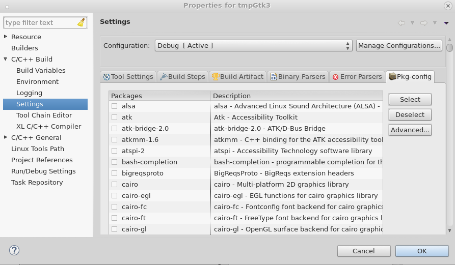
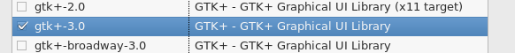
Inside src, you should see a .c file that has a hello-world template.
Now you should be able to build & run (or debug) the Gtk application. (Note, before running the first time, you need to build the project). It should build very quickly.
However, when you look up functions, you won't be able to look into the .c files.
Set the indexer to look inside your git repository.
- In your project properties.
- Under "C/C++ Build" click on 'Manage Configurations' and add an 'indexer' configurtaion.
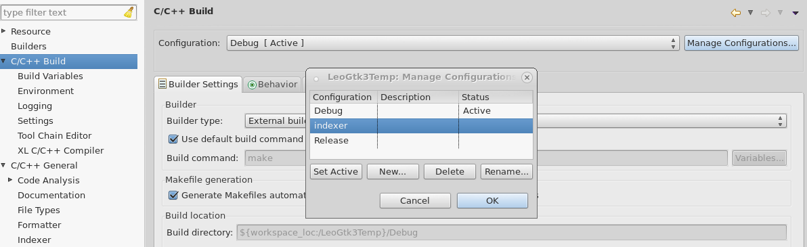
- Under "C/C++ General" -> Indexer, click "Enable project specific settings".
- Under "Indexing Strategy", select "Use a fixed build configuration" and select your newly created 'indexer' configurtaion.
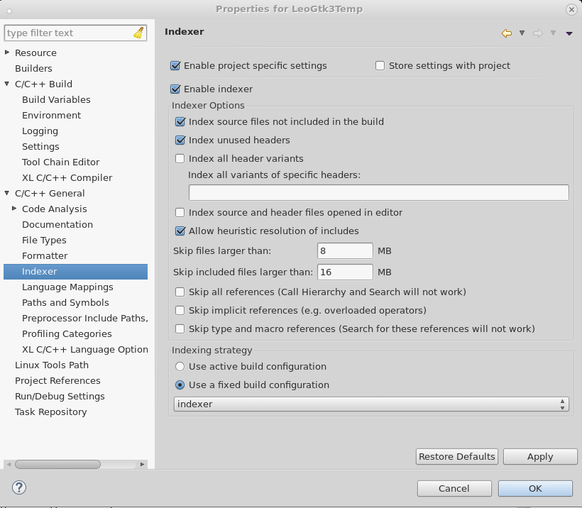
- Under "C/C++ General" -> "Path and Symbols", switch to the 'indexer' configuration, and in the "Include" -> "GNU C", add your workspace Gtk/glib/cairo/gtk-pixbuf/pixman projects.
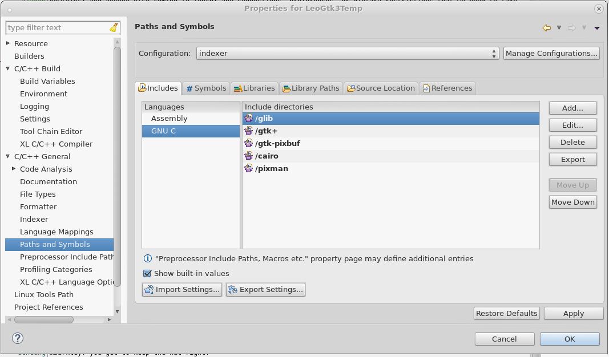
- Now click on Ok. Right click on your project -> Indexer -> Rebuild index.
Now you should be able to build the project as usual, but also when you open function definitions, you should be able to see the gtk source code from your git hub repo.
Debugging Gtk Apps
Besides stepping through a Gtk appliction, you also use the GtkInspector, which can be ran for a Gtk3.14+ application to see real-timie information about your running Gtk application. (see below).
gtk Debug flags for apps GTK
You can set launch flags to help debug gtk apps as well as SWT snippets.
E.g set global var GTK_DEBUG = geometry to get detailed frame-sizes.
or –g-fatal-warnings will halt the app upon a warning. See Gtk ref for full list: https://developer.gnome.org/gtk3/stable/gtk-running.html
I haven't used this much, but the stop-on warnings might come in handy if you want to debug warnings.
GtkInspector
About
Gtk inspector is a good friend when it comes to troubleshooting styles/positioning and functionality of Widgets.
It can provide information about running Gtk Applications. Note, this includes Eclipse or a SWT snippet when they run on Gtk3.14 or above.
Things it can do:
- Display widget hierarchy
- Live tweaking of properties (including CSS styles)
- identify widgets by pointing to them
- see widget composition (e.g GtkComboBoxText is made of GtkToggleButton, GtkTreeView, GtkEntry etc..)
- Change themes on the fly.
- And much more.
For example, here I am using GtkInspector to change the color of Entry on the fly with some CSS:
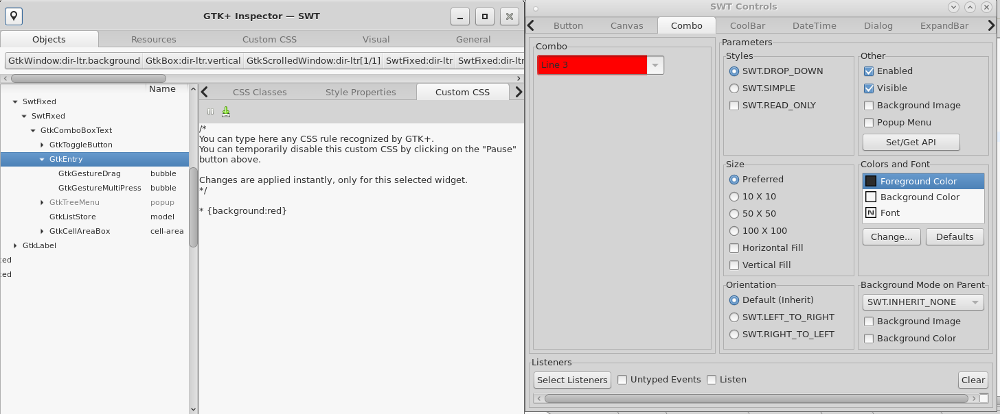
Opening GtkInspector
- Manual Launch
Once a Gtk3.14+ app is open (this include Eclipse), press:
Ctrl+Shift+d / (Ctrl+Shift+i)
NOTE: Sometimes it doesn't open when the mouse is over some contorls like Canvas. In this case, just keep trying to open while hovering over other controls until it fires up.
- Launch on app ran
You can set an environmental variable to indicate that GtkInspector should launch right away:
export GTK_DEBUG=interactive
However, I found that much of a Gtk application loads dynamically and if GtkInspector is launched at start-up instead of later on, then sometimes it doesn't show the widget- hierarchy correctly.
Limitation: GtkInspector and reparenting
As a note, when you re-parent widgets in Gtk/Swt, the hierarchy doesn't get updated in GtkInspector. This has an impact on widgets that do re-parenting, e.g SWT.Group/SWT Tabfolder.
If hierarchy matters, you should doublecheck pointers.
References
Upgrade ubuntu`s gtk to use gtkInspector: http://www.webupd8.org/2014/10/how-to-install-gnome-314-in-ubuntu.html
My blog post on it: https://coffeeorientedprogramming.wordpress.com/2014/10/27/how-to-tell-if-you-are-running-eclipse-on-gtk2-or-on-gtk3/comment-page-1/#comment-8
Other: http://blogs.gnome.org/mclasen/2014/11/23/gtk-inspector-update/ https://wiki.gnome.org/Projects/GTK+/Inspector
Debugging the native 'Gtk' C part of an SWT application.
About
- When to debug Gtk/C
Once in a while when troubleshooting an SWT issue, you will get into a situation, where there is a bug in swtFixed container or you need to debug Gtk itself to see what goes wrong.
E.g Gtk2 may have one behaviour and Gtk3 may have another for the same native call.
- How it works
To debug the 'c' part of a running Java application, you need to 'attach' yourself to the Java Virtual Machine (JVM) from inside Eclipse.
But before doing so, you need to compile Gtk and Swt bindings with debug flags and optimizations turned off.
Here is a diagram to illustrate: 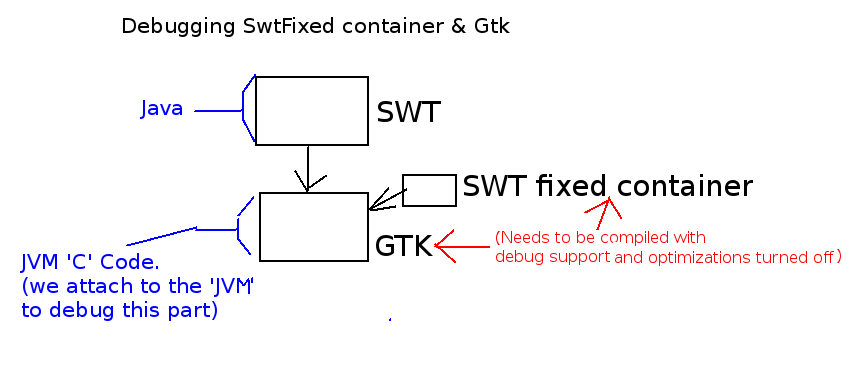
{kind=link}
Further, since eclipse.platform.swt is a Java project that contains C code, you will have to create a C project and link to that folder to debug the C code. As a note, the source and binaries will be in different folders, so you will need to create a source and a debug C project (more to follow).
Building SWT jni bindings with debug support.
You need to rebuild the swt SO files, but with debug support. Feel free to use the script I provided in Rebuilding SO file with the debug paramater 'g' :
swtjnibuild -g
This makes the script set some flags and triggers a make manually:
export SWT_PTR_CFLAGS="-O0 -g3 -ggdb3" make -f make_linux.mak all make_cairo
To make this scrpit, I inspected the make file, and extract the last few lines adding the flags myself. This also turns off optimizations (-O0).
Rebuilding Gtk with debug support and w/o optimizations.
You will need to compile Gtk+ with debugging support and optimizations turned off. You can find detailed instructions on how to do it in: Compiling Gtk+ I.e:
./autogen.sh && ./configure --enable-x11-backend --enable-wayland-backend --enable-debug=yes && make CFLAGS="-g3 -ggdb3 -O0" -j4 &&
Set the SWT widget to use new Gtk
Similar to the Gtk compiliation instructions, you need edit the SWT snippet run configuration and set the environmental variable to point to the freshly compiled .libs folder. E.g:
LD_LIBRARY_PATH = /home/lufimtse/git/gtk+/gtk/.libs
NOTE: You will have to do this for every single widget/SWT snippet that you wish to debug at the gtk level.
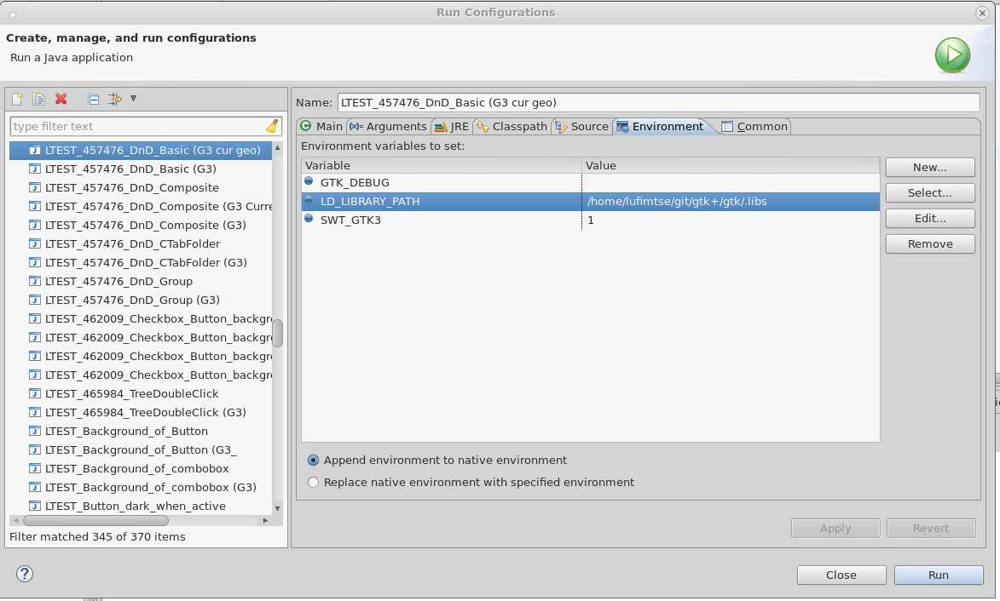
Debug Gtk bits via attach-proccess
To debug the Gtk bits, you can attach yourself to the JVM part of the SWT application while it is running.
Inside the loaded Gtk code base, set a break point somewhere. E.g inside:
gtkmain.c:gtk_main_do_event(GdkEvent *event).
This will be triggered an almost every Gdk event.
- Launch your SWT application.
In terminal execute
jps(java proccesses) and identify the pid of your SWT app.lufimtse@unused-10-15-18-183 pathscripts$ jps 357 Jps 2824 LayoutExample #<<< this is the SWT snippet.
As a side note, I often set the title of a snippet to the pid of the proccess. This way I don't have to look for it with
jpsanymore. To do this in java:ManagementFactory.getRuntimeMXBean().getName().split("@")[0];
- In Eclipse, press Ctrl+3, then search for 'Debug Attached Executable'. (I usually search for 'attached' and it pops up).
- Search for 'java'. You should see a list of multiple java proccesses. Pick the one that has the PID of your snippet.
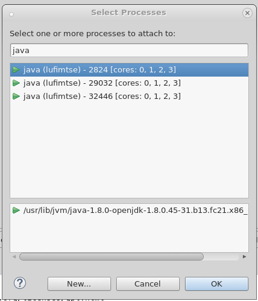
- If things went well, Eclipse should break inside the file
pthread_join.csomewhere at the 'wait for child' section.
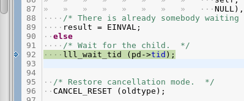
- Press 'f8' (continue). Then try to move the SWT widget or do something with it.
Eclipse should stop at the
gtk_main_do_event(..)function and you should be able to step through the code.
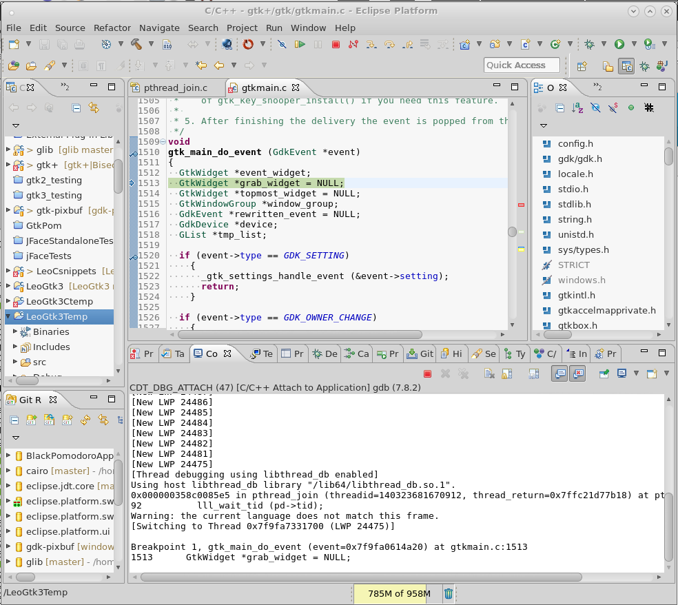
Debugging swtFixed custom code
About Source code and binary code locations
SWT keeps it's source code in one place, but during a project clean-up & rebuild, SWT Tools will copy the source code from src folder to the binary folder.
As such, to make changes that have an impact on the code, you need to edit code in the src folder, but to debug you need to open the source code from the binary folder.
To make matters more complicated, during a rebuild, SWT tools will erase the whole binary folder and re-create it. This means that if you imported the folder as a project, the pointer to that folder is lost and the project 'dissapers' from Eclipse. However, there is a way to get around it. You can create a project in some other folder and add a link the SWT binary folder as a source. This way the project survives re-builds.
Souce and debug folders
Source code lies here: (e.g for changes to source code):
~/git/eclipse.platform.swt/bundles/org.eclipse.swt/Eclipse SWT PI/gtk/library
SWT Tools then copies code here (for debugging, don't edit as this folder is deleted & recreated):
~/git/eclipse.platform.swt/bundles/org.eclipse.swt/bin/library
Creating src/binary projects in Eclipse
- Create two Eclipse 'C plain makefile' projects and place them anywhere on your system. e.g ~/eclipseProjects/<your Project>
- Name them something like "swtCustomDebug" and "swtCustomSource"
For swtCustomSource
- Edits project properties, under Path and Symbols -> Source location, link folder: ~/git/eclipse.platform.swt/bundles/org.eclipse.swt/Eclipse SWT PI/gtk/library
- under references tab, link to (for function-lookup functionality).
- cairo / glib / gtk+ / gtk-pixbuf /pixman etc..
- rebuild C/C++ index for this project.
This project you will use to make changes to the source code itself. But debuggign doesn't work as there is no effect on setting break points.
For swtCustomDebug:
- Edits project properties, under Path and Symbols -> Source location, link folder: ~/git/eclipse.platform.swt/bundles/org.eclipse.swt/bin/library
- under references tab, link to (for function-lookup functionality).
- cairo / glib / gtk+ / gtk-pixbuf /pixman etc..
- rebuild C/C++ index for this project.
In this project, you can set break points and step through code as you debugged gtk.
Debugging swt custom
- Now in swtCustomDebug, in
os_custom.c, set a breakpoint somewhere, e.gswt_fixed_forall(..). - Open some snippet, e.g DNDExample.java found in org.eclipse.swt.examples.dnd.
- set the library path of that snippet to the newly compiled gtk (in section above) & SWTGTK3=1.
- Now start a C debug session by attaching to the JVM (as done above). Once you stopped
at the
join_threadsection press F8 to continue. - Now perform some DnD operation in the SWT snippet. Eclipse should stop the snippet in the
swt_fixed_forall(..)code. E.g screen shot:
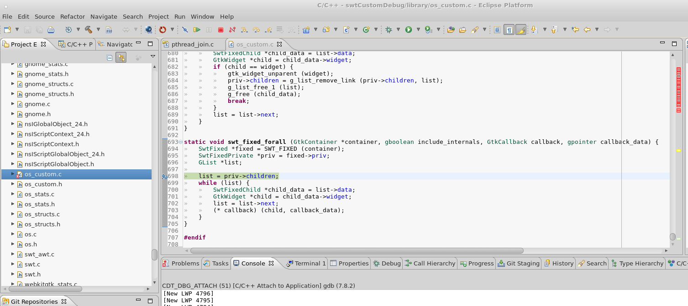
Troubleshooting
If something doesn't work in Eclipse:
- Try native gdb from the command line, you can attach to a proccess via
gdb --pid=1234. Often if that doesn't work, Eclipse doesn't work either and vice versa. - Try with a simple C snippet first, then attach yourself to a running C snippet, then the same with a Gtk Application, then eventually work your way to SWT.
- try refresh UI fix. See Clear ui layout
Gtk Debugging appendix/notes
- Don't use Gtk debug info
In fedora, for almost every package you can install debug-info with which you can debug an appliaction. You can install the debug info for Gtk as well, e.g:
dnf install debug info gtk3
However, because Gtk is optimized, debugging the optimized code is not very effective as your code will be jumping around a lot. Thus I found it better to manually compile Gtk and turn off optimizations.
Tips for Gtk/swtFixed debugging
Gtk handles to SWT Handles
Now when you debug Gtk part of SWT, there is a bit of a bridge between SWT and Gtk that you have to cross. Variable content/identifying widgets etc..
Sometimes you want to identify an SWT widget on the Gtk side. This is sometimes not a trivial task because in Gtk you have GdkWindows with many GtkWidgets drawn on top that don't always map onto SWT widgets in the same way.
One way to do so, is to look at the GtkHandle on the SWT side and then find it on the Gtk side. Gtk handles are displayed as hex. SWT in java shows them as are long ints. When debugging SWT app, you can print out handles into console. When stepping through Gtk, to identify handles, convert it to decimal. e.g To convert, e.g gtk hangle: 0x7f60c0623270, paste into website: http://www.binaryhexconverter.com/hex-to-decimal-converter To get: 140053521248880. which should match what is printed via: System.out.println ("Top Drop handle: " + dropLabel.handle);
As note, decimal to hex: http://www.rapidtables.com/convert/number/decimal-to-hex.htm
Programmatically, instead of using the website, in SWT you can convert a long int to hex via:
Long.toHexString (OS.gtk_widget_get_window(control.topHandle ()));
Identify widget by gtkInspector address column & window property.
Another method to identify GdkWindows and GtkWidgets is to see them in GtkInspector.
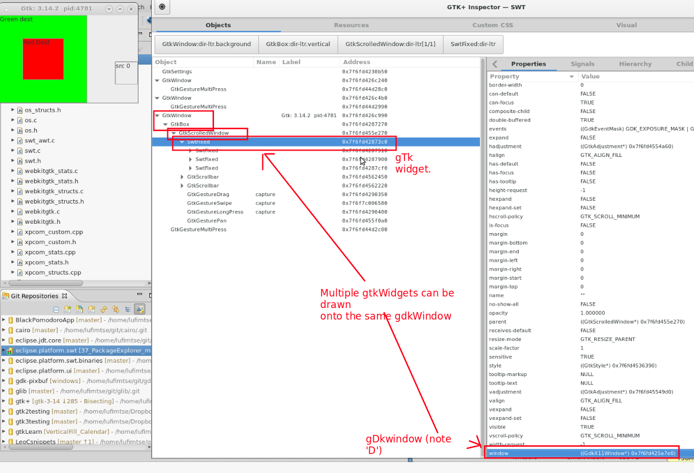
Notes:
- If the 'Address' column is not visible at first, you might have to expand the right expander scrollbar.
- the GdkWindow is a property of a GtkWidget.
- Note multiple GtkWidgets in a hierarchy e.g (SwtFixed -> GtkFrame -> GtkLabel) may be drawn onto a single GdkWindow.
Cast to see variable content
Sometimes you get a functiont that accepts any widget:
GtkWidget *button
But you need to access some field specific to a particular widget.
In this case, you can cast:
((GtkButton*)button)->x
GDB console accepts usual gdb syntax
If you are used to using GDB form the command line, during debug you can type commands into the console to control GDB.

Troubleshooting Eclipse
Start up isssues
Workspace in use
to fix:
rm ~/workspace/.metadata/.lock
General things to try
Force Eclipse to rebuild all caches:
eclipse -clean
Gtk2/Gtk3 flag
Try running Eclipse under other gtk version:
export SWT_GtK3=1 #or 0 eclipse
UI issues
Clear ui layout
Sometimes certain configuration of the UI workspace causes glitches. E.g
- my UI once caused GDB debugger not to highlight the currently executed line
- doubleclicking variables didn't highlight all instances of that variable.
You can flush your UI settings by starting eclipse with flag:
eclipse -clearPersistedState
turn off eclipse CSS
start eclipse with flag:
-cssTheme none
Appendix / Random things
Source code of this document
I wrote the document in emacs org-mode and exported to html.
This is the source repository for the document: https://github.com/LeoUfimtsev/LeoUfimtsev.github.io (See org > swt-dev.org) To compile this document, open Emacs, open swt-dev.org, then run:
org-html-export-to-html
You will also need to get org-html-themes for the dynamic table of content:
cd ~/ mkdir git cd git git clone https://github.com/fniessen/org-html-themes
Eclipse Release milestones and release canidates
Eclipse is released in several milestones, then in release canidates. See: https://wiki.eclipse.org/Simultaneous_Release
Release Canidates should not contain big changes.
Mystical ~/.swt folder
Sometimes you may observe a ~/.swt folder in your system. This folder is generated if you launch an swt application that uses the swt .jar file instead of the swt sources. Sometimes this can be instances of Eclipse.
On fedora 22, I once had to soft link the content of that folder to where I keep the regular compiled os.c files. (See OS.java ) to make eclipse use the newly compiled swt instead of the jar version.
Eclipse CSS
Gtk CSS differs from Eclipse CSS.
Eclipse dark-theme keeps it's css in: http://git.eclipse.org/c/platform/eclipse.platform.ui.git/tree/bundles/org.eclipse.ui.themes/css
jhbuild Compiling/Building really new gtk versions on your own system
If you can't build some Gtk version due to missing dependencies, then there is a tool called jhbuild. https://wiki.gnome.org/Projects/Jhbuild
It automatically downloads and builds dendencies. (e.g Glib & it's dependencies).
I never really got it to work properly, I just kept getting circular dependency issues. I got something along the lines of:
Requested 'glib-2.0 >= 2.43.4' but version of GLib is 2.42.2 Requested 'atk >= 2.15.1' but version of Atk is 2.14.0
Instead I use the VM's with pre-build Gtk's.
However, some useful links may be:
Getting started: https://developer.gnome.org/jhbuild/stable/getting-started.html
Example gtk jhbuildrc: https://people.gnome.org/~aruiz/gtk+/standard.jhbuildrc
Maybe useful: (mac config) https://github.com/rhult/gtk-osx-build/blob/master/jhbuildrc-gtk-osx-cfw-10.4
About Author
I'm Leo Ufimtsev. I'm currently (2015.05.27) an Intern at Red Hat doing full time work on SWT.
Feel free to follow me on twitter: https://twitter.com/LeoUfimtsev or check out my blog: https://coffeeorientedprogramming.wordpress.com/
Hex to decimal and decimal to hex conversion
These are useful to go between Gtk & SWT handles.
Decimal to hex: http://www.rapidtables.com/convert/number/decimal-to-hex.htm
Hex to decimal: (DO NOT USE decimal to hex conversion on that site, it's not accurate): http://www.binaryhexconverter.com/hex-to-decimal-converter
SWT commiter access
If you becmoe committer, you need to access git via ssh:
Git: git+ssh://lufimtsev@git.eclipse.org/gitroot/repo Gerrit(if available): ssh://lufimtsev@git.eclipse.org:29418/gitroot/repo
Footnotes:
I never got around figuring out why the build fails. My former mentor showed me how to work around this issue and I've been doing so ever since. If you find a better aproach to doing this, please let me know.
As taken from http://www.gtkbook.com/